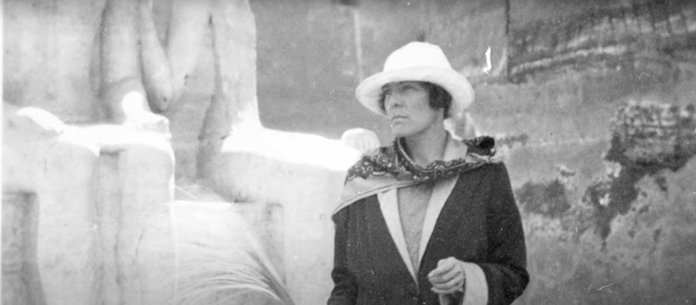

Contexto
¿POR QUÉ?
Todos somos expertos
MODERNISMO
Imagism
CANTO I
"Y entonces descendimos a la nave,
Enfilamos la quilla a la rompiente, a la mar divina, y
Erguimos el mástil e izamos la vela en la nave prieta,
Embarcamos ovejas y nuestros propios cuerpos
Agobiados de llanto, y los vientos en popa
Nos impulsaban con velas panzudas,
De Circe esta nave, la diosa del peinado minucioso.
Nos sentamos en el sollado, el viento trababa el timón,
Y con velas tirantes cruzamos el mar hasta el final del día.
El sol a su modorra, sombras cubren el océano,
Llegamos a los confines de las más altas aguas,
A las tierras cimerias, y ciudades pobladas
Cubiertas de niebla de apretada trama, jamás perforada
Por destello de luz solar
Ni tachonada de estrellas, espiando desde el firmamento
La noche más prieta amortajaba a estos infelices mortales.
El océano revertía su curso, llegamos entonces al sitio
Que Circe predijo.
Aquí Perimedes y Euríloco realizaron los ritos,
Y empuñando la ceñida espada
Excavé el hoyuelo de un codo de ancho;
Derramamos libaciones para cada muerto,
Primero la hidromiel y luego vino dulce, agua mezclada con
harina blanca.
Entonces recé muchos rezos a esas tétricas calaveras;
Como es costumbre en Ítaca, toros estériles de los mejores
Para el sacrificio, amontonando ofrendas en la pira,
Una oveja sólo para Tiresias, negra y con un cencerro.
Obscura sangre fluyó a la fosa,
Almas del Érebo, cadavéricos despojos de doncellas muertas
El día de su boda, de jóvenes y ancianos que mucho
soportaron;
Almas maculadas de lágrimas recientes, tiernas niñas,
Hombres tantísimos, eviscerados con lanza de bronce,
Despojos de batalla, empuñando sus armas aún sangrantes,
Todos éstos me atosigaban; con sus gritos,
Con palidez, clamando a mis hombres por más víctimas;
Faenamos los rebaños, ovejas a bronce abatidas;
Derramamos ungüentos, clamando a los dioses,
A Plutón poderoso, alabando a Proserpina;
Desenvainada la filosa espada,
Me planté para apartar a los impetuosos difuntos impotentes,
Hasta que pudiese oír a Tiresias.
Pero primero vino Elpénor, nuestro amigo Elpénor
Insepulto, yerto en la dilatada tierra,
Sus miembros que dejamos atrás en la casa de Circe,
Sin lágrimas ni mortaja sepulcral, urgidos por otros trabajos.
Lastimero espíritu. Y exclamé con palabras presurosas:
«Elpénor, ¿cómo has llegado hasta esta oscura costa?
»¿Has venido a pie, aun así aventajando a los navegantes?».
Y él con graves palabras:
«El hado adverso y el vino abundante. Dormía en la morada
de Circe.
»Y bajando por las altas escalas, descuidado,
»Di contra el contrafuerte y caí,
»Desnucándome, y el alma buscó el Averno.
»Pero tú, oh rey, te imploro me recuerdes, al inllorado,
insepulto,
»Amontona mis armas, sea mi tumba en la playa y su
inscripción:
»Un hombre sin ventura, y su nombre por venir.
»Por estela, el mismo remo que fatigué junto a mis
compañeros».
Y vino Anticlea, a quien aparté de un golpe, y luego Tiresias el
tebano,
Alzando su vara dorada, me conoció, y habló primero:
«¿Por segunda vez? ¿Por qué, hombre desastrado,
»Ante los muertos sin sol y en esta región infeliz?
»Apártate de la fosa, déjame mi brebaje sanguinario,
»para inspirar mi vaticinio».
Y di un paso atrás,
Y él, vigorizado con la sangre, dijo: «Odiseo
»Retornarás atravesando un Neptuno hostil, por oscuros
mares,
»Perderás a todos tus compañeros». Y entonces vino
Anticlea.
Quédate quieto, Divus. Me refiero a Andreas Divus,
In officina Wecheli, 1538, basado en Homero.
Y navegó pasando Sirenas y de allí desviando mar afuera
Y hasta Circe.
Venerandam,
En la frase del cretense, Afrodita de la dorada corona,
Cypri munimenta sortita est, hilarante, orichalchi, con
doradas
Cintas y pechera, tú, la de oscuros párpados,
Portando la rama dorada del Argicida. De modo que:"
H.D.

En Ítaca
De ida y de vuelta,
las extensas olas se arrastran
y con espuma surcan la arena;
la noche se oscurece y el mar
adopta el desesperado color
negro que usan las esposas
cuando su amor se acaba.
De ida y de vuelta,
el hilo enredado se afloja,
por arriba y por debajo y así;
por arriba y todo está cosido;
ahora, mientras ato un extremo,
desearía que algún amigo apasionado
apartara, impetuosamente,
estos dedos del telar.
Mis pensamientos agotados
traicionan mi alma,
justo cuando el trabajo se acaba;
rápido mientras el tramado está completo,
se vuelve ahora mi espíritu, rápido,
y rasga el diseño que está ahí,
las flores tan hábilmente labradas,
el borde de azul marino,
la costa azul marino de casa.
La tela era bella por demás,
aquella tela de imágenes,
embelesos que pensaba
que él tenía, que yo había perdido;
tejiendo su felicidad
dentro del telar,
tejiendo su fama y su ardor,
pensé que mi trabajo se había terminado,
oré para que sólo uno
de aquellos a quienes había rechazado,
se inclinara y conquistara
esta larga espera con un beso.
Pero cada vez que veo
mi obra tan bellamente
entramada y estoy por conservar
la imagen en su totalidad,
Atenea arrebata mi alma
y sesga mi entendimiento,
veo como columnas de lluvia
su carro y sus flechas,
veo caer las flechas,
veo a mi señor moverse
como Héctor, señor del amor,
lo veo equiparado con hermosos
y brillantes rivales y veo
que aquellos rivales menores huyen.
Eugene O´Neill
"Deseo bajo los olmos"
Francis Scott Fitzgerald
The Great Gatsby
Presente y Pasado